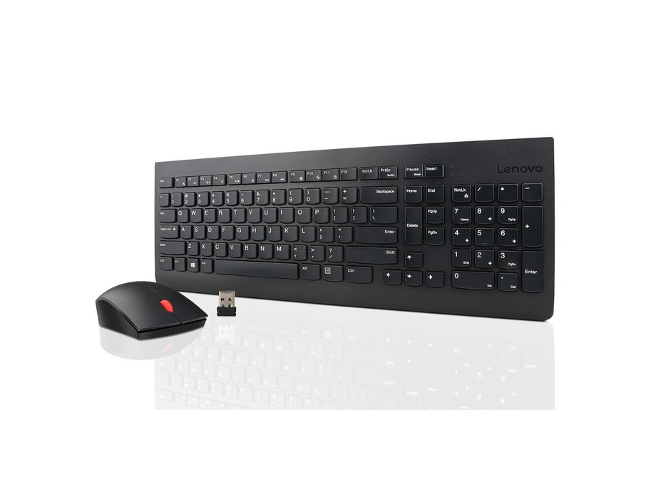
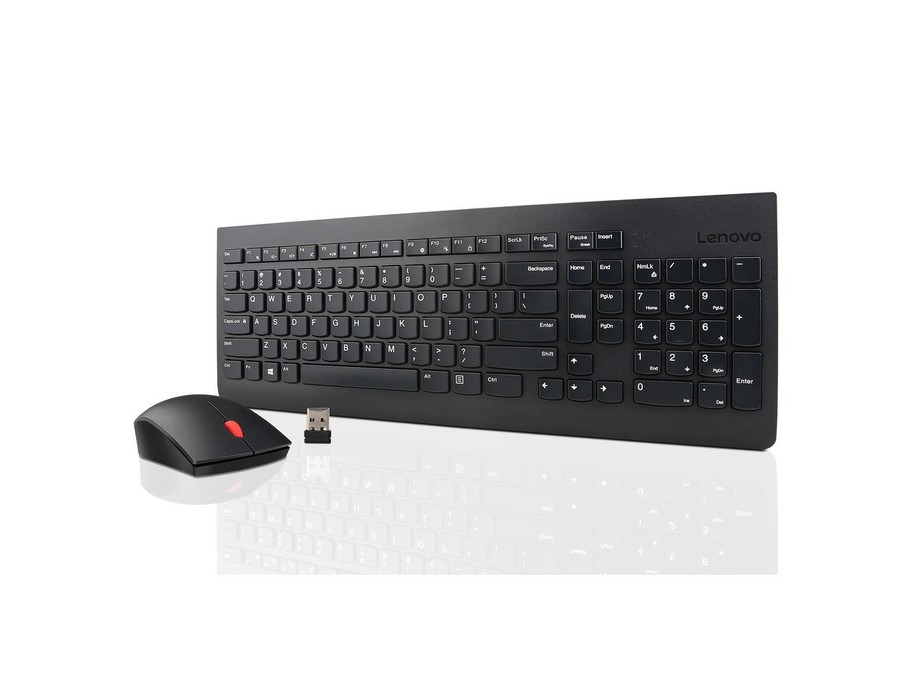

Midi klaviatūros - Klavišiniai | Tamsta - Muzikos prekių parduotuvė
2020.10.30 03:18

Apie mus Kontaktai Tinklaraštis Instrumentai: +37061216666 Pro Audio: +37061818992 tamsta@tamsta.com Paieška LT EN Paskyra 0 Pageidavimai Krepšelis IŠPARDAVIMAS Gitaros Go to Gitaros Akustinės gitaros Klasikinės gitaros (nailoninėmis stygomis) Akustinės gitaros (metalinėmis stygomis) Akustinių gitarų rinkiniai Akustinės gitaros kairiarankiams Elektro-Akustinės gitaros Elektro-Akustinės klasikinės gitaros Elektro-Akustinės gitaros metalinėmis stygomis Elektro-Akustinės gitaros kairiarankiams Elektrinės gitaros Elektrinės gitaros Elektrinių gitarų rinkiniai Elektrinės gitaros kairiarankiams Bosinės gitaros Elektrinės bosinės gitaros Akustinės bosinės gitaros Bosinės gitaros kairiarankiams Bosinių gitarų rinkiniai Ukulelės ir gitalelės Kiti instrumentai Akustinių instrumentų stiprintuvai Stiprintuvai elektrinei gitarai Stiprintuvai elektrinei gitarai (su kolonėle) Stiprintuvai elektrinei gitarai (be kolonėlės) Kolonėlės elektrinei gitarai Gitarinės kolonėlės simuliatoriai Atenuatoriai Stiprintuvai su baterijomis elektrinei gitarai Stiprintuvai bosinei gitarai Stiprintuvai Bosinei gitarai (su kolonėle) Stiprintuvai bosinei gitarai (be kolonėlės) Kolonėlės bosinei gitarai Stiprintuvai su baterijomis bosinei gitarai Stiprintuvų dalys ir aksesuarai Stiprintuvų dalys Perjungimo pedalai Vakuuminės lempos Garsiakalbiai elektrinei gitarai Gitaros ir boso efektai Efektų pedalai elektrinei gitarai Efektų pedalai bosinei gitarai Efektų procesoriai elektrinei gitarai iOS/Android efektų procesoriai elektrinei gitarai Garso Ir ekspresijos pedalai Gitarų sintezatoriai Pradiniai stiprintuvai ir DI box Efektai akustinei gitarai Pedalų dėžės Efektų maitinimas Efektų aksesuarai Stygos Stygos elektrinei gitarai Stygos akustinei gitarai Stygos klasikinei gitarai Stygos bosinei gitarai Stygos ukulelei Stygos mandolinai Stygos bandžai Pavienės stygos gitarai Kitų Instrumentų stygos Brauktukai Brauktukai Brauktukų laikikliai Laidai Instrumentiniai Laidai Kolonėlių laidai Pedaliniai Laidai ir aksesuarai Aksesuarai Kapodasteriai Derintuvai Diržai Slaidai Pakojai Valymo ir priežiūros priemonės Gitarų sieniniai laikikliai Stovai Diržo laikikliai Bevielės sistemos Kiti aksesuarai Dovanos (apranga ir kt.) Dalys ir įrankiai Potenciometrai Derinimo mechanika Ėmiklių perjungėjai Lizdai ir lizdų dangteliai Varžtai Tremolo sistemos Gitaros suktukai ir rankenėlės Ėmiklių dangteliai Apatiniai tilteliai Viršutiniai tilteliai Plastikinės apsaugos Ėmikliai elektrinei gitarai Ėmikliai akustinei gitarai Kitos detalės Įrankiai Ėmikliai kitiems instrumentams Dėklai Dėklai akustinei gitarai Dėklai klasikinei gitarai Dėklai elektrinei gitarai Dėklai bosinei gitarai Dėklai ukulelei Kiti dėklai Būgnai Go to Būgnai Akustiniai būgnai Būgnų komplektai Soliniai būgnai Maršiniai būgnai Elektroniniai būgnai Perkusija Kachonai Melodiniai perkusiniai instrumentai Smulki perkusija Kongai, bongai, ir kiti rankom grojami būgnai Džembės Lazdelės Būgnų lazdelės Būgnų šluotelės Lazdelės kitiems instrumentams Lėkštės Lėkščių komplektai Hi-Hat lėkštės Crash lėkštės Ride lėkštės Splash lėkštės China lėkštės Efektinės lėkštės Orkestrinės lėkštės Gongai Plastikai Stovai, kėdės, pedalai, laikikliai, dalys Pedalai Hi-Hat stovai Stovai soliniam būgnui Tom būgnų stovai Ir laikikliai Lėkščių stovai ir laikikliai Būgnų laikikliai ir adapteriai Būgnų kėdutės Būgnų dalys Kiti stovai Aksesuarai Dėklai Klavišiniai Go to Klavišiniai Akustiniai pianinai ir fortepijonai Skaitmeniniai pianinai Sceniniai pianinai Klavišiniai su akompanimentu Sintezatoriai Sintezatoriai Sempleriai Ritmo mašinos Garso Moduliatoriai Midi klaviatūros Akordeonai ir armonikos Akordeonai Armonikos Dėklai Diržai Aksesuarai Adapteriai Dėklai Suoliukai ir kėdutės Pedalai Klavišinių instrumentų stovai Klavišinių instrumentų stovų priedai Midi interfeisai Stiprintuvai klavišiniams instrumentams Derinimo raktai Apšvietimas Lėkštutės pianino ir fortepijono ratukams Styginiai Go to Styginiai Smuikai Altai Violončelės Kontrabosai Elektriniai styginiai instrumentai Styginių Instrumentų dėklai Stygos Stygos smuikui Stygos altui Stygos čelei Kontraboso stygos Pavienės stygos Aksesuarai ir dalys Priežiūros priemonės Kanifolija Antpetėliai Atramėlės Strykai Pabarzdėliai Surdinos Pogrifiai Kuoliukai Derinimo mašinėlės Stovai Ir laikikliai Derintuvai Ir kamertonai Įgarsinimas Pučiamieji Go to Pučiamieji Lūpinės armonikėlės Chromatinės armonikėlės Diatoninės armonikėlės Tremolo armonikėlės Oktavinės armonikėlės Aksesuarai Klarnetai Saksofonai Altiniai saksofonai Tenoriniai saksofonai Baritoniniai saksofonai Sopraniniai saksofonai Fleitutės Fleitos Trimitai Kornetai Fliugelhornai Trombonai Eufonijos Tūbos Pūstukai Pūstukai saksofonui Pūstukai klarnetui Pūstukai trimitui Pūstukai kornetui Liežuvėliai Liežuvėliai saksofonui altui Liežuvėliai saksofonui tenorui Liežuvėliai saksofonui baritonui Liežuvėliai saksofonui sopranui Liežuvėliai klarnetui Surdinos Pučiamųjų priedai Pučiamųjų dėklai Valikliai Tepalai Dirželiai Stovai Lipdukai pūstukui Ligatūros Lyros Pagalvėlės Kiti aksesuarai Kiti pučiamieji instrumentai Kazoo Didgeridoo Melodikos Elektroniniai pučiamieji Dambreliai Nosinės fleitos Althornai Baritonhornai Studija Go to Studija Programinė Įranga Studijinės garso kolonėlės Aktyvios artimo lauko kolonėlės Aktyvios vidutinio lauko kolonėlės Aktyvios tolimo lauko kolonėlės Pasyvios artimo lauko kolonėlės Žemų dažnių kolonėlės 2.1 kolonėlių rinkiniai Kolonėlių garso valdikliai Studijinių kolonėlių stovai Aktyvios Studijinės kolonėlės namams Garso plokštės USB garso plokštės Thunderbolt garso plokštės Fireware garso plokštės DSP Procesoriai Garso plokščių aksesuarai Ethernet/Dande Garso Plokštės Konverteriai Midi įrenginiai Midi kontroleriai MIDI sąsajos Midi įrenginių dėklai Ritmo mašinos ir Sampleriai Garso Moduliatoriai Priešstiprintuviai Garso įrašymas Master garso įrašytuvai Nešiojami garso įrašytuvai/diktofonai Akustinės Medžiagos Standartinės Absorbacinės Medžiagos Žemų Dažnių Absorbacinės Medžiagos Difuzinės medžiagos Įvairūs akustiniai elementai Studio įrangos komplektai Įvairi studijos įranga Studijos Įrangos Priedai Signalo šakotuvai Studijos Įrangos Stovai Studijos Įrangos Dėklai ir Dėžės Studijos Stalai M-Audio AIR192X4 Pridėti į pageidavimų sąrašą Prekyboje 115,00 € M-Audio AIR192X6 Pridėti į pageidavimų sąrašą Prekyboje 135,00 € Pro Audio Go to Pro Audio Garso kolonėlės Kolonėlių komplektai Koluminės garso sistemos Aktyvios garso kolonėlės Pasyvios garso kolonėlės Aktyvios sceninės monitorinės kolonėlės Pasyvios sceninės monitorinės kolonėlės Aktyvios žemų dažnių kolonėlės Pasyvios žemų dažnių kolonėlės Linijinio masyvo kolonėlės Vidurinių/Aukštų dažnių kolonėlės Portatyvios kolonėlės Garso Kolonėlių Dėklai Kolonėlių Stovai Garso kolonėlių stovų dėklai Sieniniai kolonėlių laikikliai Vamzdžiai Kolonėlėms Garso kolonėlių komponentai Garsiakalbiai Aukštų dažnių garsiakalbiai Kiti garso kolonėlių komponentai Garso kolonėlių priedai Garso pultai Analoginiai garso pultai Skaitmeniniai garso pultai Instaliaciniai zoniniai garso pultai 19" garso pultai Garso pultų dėklai Garso pultų priedai Garso stiprintuvai Garso stiprintuvai Garso Stiprintuvai su Mikšeriu Garso sistemų stiprintuvai Instaliacinė Įranga Instaliacinės kolonėlės Instaliaciniai garso stiprintuvai Instaliacinių garso stiprintuvų priedai Garso Valdikliai Papildomi Instaliaciniai Įrenginiai In-Ear monitorinės sistemos Laidinių In-Ear sistemų kontroleriai In-Ear ausinės In-Ear sistemos In-Ear ausinių dalys In-Ear Sistemos Siųstuvai In-Ear Sistemos Imtuvai In-Ear ausinių stiprintuvai In-Ear Sistemų Komponentai Ausų apsauga Krosoveriai Pro Audio aksesuarai DI-Box Tvirtinimo aksesuarai Juostos Signalo šakotuvai Energijos paskirstytojai Papildomi priedai Bevieliai garso perdavimo įrenginiai Konverteriai Media Grotuvai DJ Įranga ir Efektai Go to DJ Įranga ir Efektai DJ kontroleriai DJ garso pultai DJ grotuvai Patefonai Patefonai Phono priešstiprintuviai Adatėlės Kartridžai Kilimėliai Patefonų priedai DJ garso plokštės ir programinė įranga DJ aksesuarai Dj įrangos dėklai DJ įrangos transportavimo dėžės DJ kompiuterių stovai Apsauginiai DJ Įrangos Viršeliai Vinilų dėžės Garso apdirbimo įranga Go to Garso apdirbimo įranga Vokaliniai efektai Multi efektai Kolonėlių valdymo sistemos Grafiniai ekvalaizeriai Kompresoriai ir Geiteriai Mikrofonai Go to Mikrofonai Vokaliniai mikrofonai Didžiulės diafragmos mikrofonai Mažos diafragmos mikrofonai Instrumentiniai mikrofonai Mikrofonai pučiamiesiems Mikrofonai mušamiesiems instrumentams bei perkusijoms Mikrofonai styginiams instrumentams Mikrofonai akustinėms gitaroms Mikrofonai klavišiniams instrumentams Mikrofonai instrumentų stiprintuvams Boundary mikrofonai Riboninės diafragmos mikrofonai USB mikrofonai Bevieliai mikrofonai Bevielės rankoje laikomos mikrofonų sistemos Bevieliai rankoje laikomi mikrofonai Bevielės ant galvos dedamos mikrofonų sistemos Bevieliai prisegami mikrofonai Bevielės instrumentinės sistemos Bevielės kombinuotos sistemos Bevielės sistemos video kamerai Bevielių sistemų komponentai Bevielių sistemų priedai Ant galvos dedami mikrofonai Prisegami mikrofonai Stereo mikrofonai Video mikrofonai Android & iOS mikrofonai Reporteriniai mikrofonai Matavimų mikrofonai Mikrofonų rinkiniai Instaliaciniai mikrofonai Ilgo kaklo mikrofonai Konferenciniai mikrofonai Modulinės mikrofonų sistemos Mikrofonų komponentai Mikrofonų aksesuarai Stovai mikrofonams Mikrofonų stovų dėklai Mikrofonų stovų alkūnės Mikrofonų dėklai Mikrofonų laikikliai Fantominio maitinimo adapteriai Pop filtrai, apsaugos nuo vėjo mikrofonams Shockmountai mikrofonams Ausinės Go to Ausinės Studijinės ausinės Hi-Fi ausinės Dj ausinės Bluetooth ausinės Ausinės su mikrofonu Ausinės būgnininkams In-ear ausinės Ausinių stiprintuvai Ausinių aksesuarai Ausinių stovai Ausinių komponentai Apšvietimo ir Scenos Įranga Go to Apšvietimo ir Scenos Įranga Apšvietimo rinkiniai Prožektoriai LED Par prožektoriai LED Bar prožektoriai LED Flood prožektoriai LED Pinspot prožektoriai Follow prožektoriai Publikos akintojai PAR korpusai Korpusų priedai IP LED šviesos Judantys prožektoriai BEAM tipo judantys prožektoriai WASH tipo judantys prožektoriai SPOT tipo judantys prožektoriai BAR tipo judantys prožektoriai Judantys efektai Akumuliatoriniai prožektoriai Teatrinis apšvietimas Teatriniai prožektoriai Follow prožektoriai Profile prožektoriai Flood prožektoriai Dekoracinis apšvietimas LED dekoracinis apšvietimas Veidrodiniai rutuliai Dekoracinio apšvietimo priedai Efektiniai prožektoriai Lazeriai LED Panelės Dūmų ir rūko mašinos Dūmų mašinos Rūko mašinos Putu mašinos Burbulų mašinos Sniego mašinos Vėjo mašinos Skysčiai Kvapai Stroboskopai Apšvietimo įrangos kontroleriai DMX kontroleriai DMX sąsajos su kompiuteriu Belaidė DMX įranga Dimeriai Šakotuvai, sujungėjai, daugintuvai Lempos Studijinės lempos Metalo halogenų lempos Apšvietimo įrangos stovai, konstrukcijos, tvirtinimo reikmenys Apšvietimo įrangos stovai Skersiniai Konstrukcijos Vamzdžių gnybtai, jungtis, trosai Flanšai, varžtai, tvirtinimo reikmenys Spansetai Montavimo aksesuarai Apšvietimo įrangos aksesuarai Draperija Apšvietino filtrai Apšvietimo įrangos transportavimo dėžės Apšvietimo įrangos dėklai Apšvietimo įrangos dalys Video Įranga Go to Video Įranga Projektorių laikikliai, stovai Adapteriai Video Mikrofonai Video kameros, registratoriai Kabeliai, jungtys, adapteriai Go to Kabeliai, jungtys, adapteriai Laidai Audio laidai Mikrofoniniai laidai Y tipo laidai Instrumentiniai laidai Laidai gitarų pedalams ir efektams Laidai kolonėlėms DMX laidai USB, UTP, SPDIF & Data laidai Video laidai Elektros laidai Patch laidai Kiti laidai Mikrofoniniai laidai (metrais, be jungčių) Laidai kolonėlėms (metrais, be jungčių) Instrumentiniai laidai (metrais, be jungčių) Skaitmeninių signalų laidai (metrais, be jungčių) Jungtys 3.5mm jack 6.3mm jack RCA XLR PowerCON SpeakON Duomenų jungtys Perėjimai ir adapteriai Daugiagysliai laidai Audio daugiagysliai laidai Audio daugiagysliai laidai (metrais) Sceninės komunikacinės dėžės Aksesuarai Paskirstytojai Maitinimo laidai Stovai, dėžės, dėklai Go to Stovai, dėžės, dėklai Stovai Instrumentų stovai Stovai gitaroms Gitarų sieniniai laikikliai Klavišinių instrumentų stovai Pučiamųjų stovai Styginių instrumentų stovai Stovai stiprintuvams Stovai mikrofonams Kolonėlių stovai Vamzdžiai Kolonėlėms Sieniniai kolonėlių laikikliai Studijinių kolonėlių stovai Apšvietimo įrangos stovai Stovai nešiojamiems kompiuteriams Išmaniųjų įrenginių stovai ir laikikliai Ausinių stovai Natų stovai Natų stovų lemputės Įvairūs stovai Stovų Aksesuarai Meškerės tipo laikikliai mikrofonams Transportavimo dėžės 19" transportavimo dėžės Studijinės įrangos transportavimo dėžės PA įrangos dėžės Apšvietimo įrangos transportavimo dėžės DJ įrangos transportavimo dėžės Priedų dėžės Transportavimo dėžių detalės ir priedai 19" transportavimo dėžių stalčiai Dėžių kampai Kampai Įvairios dėžių detalės Dėklai Instrumentų dėklai Klavišinių instrumentų dėklai Garso kolonėlių dėklai Garso kolonėlių stovų dėklai Garso pultų dėklai Mikrofonų dėklai Mikrofonų stovų dėklai Apšvietimo įrangos dėklai Studijos įrangos dėklai DJ įrangos dėklai Natų stovų dėklai Įvairūs dėklai Aksesuarai Go to Aksesuarai Dovanų kuponai Derintuvai Metronomai Batutos Kamertonai Juostos Pirštinės Ausų kištukai Dovanos (apranga ir kt.) Namams Go to Namams Garso Kolonėlės Patefonai Portatyvios Kolonėlės Garso kolonėlių valdikliai Pradžia Klavišiniai Midi klaviatūros
Midi klaviatūros
(49)Siekiant pagerinti naršymo kokybę, mes naudojame slapukus šioje svetainėje statistikos ir rinkodaros tikslais. Naršydami toliau ar spustelėdami mygtuką Sutinku , jūs patvirtinate, kad sutinkate su slapuko įrašu. Savo sutikimą galite atšaukti bet kuriuo metu, pakeisdami žiniatinklio naršyklės nustatymus ir ištrynę slapukus. Norėdami gauti daugiau informacijos apie slapukus ir jų atsisakymą, žr.
Privatumo politika
Sutinku Rūšiuoti pagal: Poziciją žemyn Poziciją aukštyn Pavadinimą žemyn Pavadinimą aukšyn Kainą nuo mažiausios Kainą nuo didžiausios Prekių kiekis: 12 24 36 12 24 36 Puslapis: / 5 Novation Launchkey 25 MK3 Midi klaviatūra, 25 jautrių klavišų, MIDI / OUT, 16x RGB lietimui jautrūs padai Pridėti į pageidavimų sąrašą Prekyboje 159,00 € Novation Launchkey 61 MK3 Midi keyboard 61 Keys, MIDI / OUT, 16x RGB Velocity Sensitive Pads Pridėti į pageidavimų sąrašą Prekyboje 259,00 € Novation Launchkey 49 MK3 Midi keyboard 49 Keys, MIDI / OUT, 16x RGB Velocity Sensitive Pads Pridėti į pageidavimų sąrašą Prekyboje 219,00 € Novation Launchkey 37 MK3 Midi klaviatūra, 37 jautrių klavišų, MIDI / OUT, 16x RGB lietimui jautrūs padai Pridėti į pageidavimų sąrašą Teirautis dėl užsakymo 179,00 € Alesis VI25 Pridėti į pageidavimų sąrašą Teirautis dėl užsakymo 155,00 € Alesis VI61 Pridėti į pageidavimų sąrašą Prekyboje 249,00 € Alesis VI49 Pridėti į pageidavimų sąrašą Prekyboje 199,00 € Alesis V61 Pridėti į pageidavimų sąrašą Prekyboje 139,00 € Alesis V49 USB-MIDI Pridėti į pageidavimų sąrašą Teirautis dėl užsakymo 95,00 € KORG nanoKEY studio Pridėti į pageidavimų sąrašą Prekyboje 129,00 € M-Audio AXIOM Air Mini 32 Pridėti į pageidavimų sąrašą Prekyboje 63,00 € Alesis Vmini Pridėti į pageidavimų sąrašą Prekyboje 59,00 € Rūšiuoti pagal: Poziciją žemyn Poziciją aukštyn Pavadinimą žemyn Pavadinimą aukšyn Kainą nuo mažiausios Kainą nuo didžiausios Prekių kiekis: 12 24 36 12 24 36 Puslapis: / 5Filtrai
Kaina Nuo Iki Filtruoti Klavišų skaičius Nemokamas pristatymas Užsakymams nuo 30€ Saugiai įpakuosime Aukštos kokybės paruošimas siuntimui Reikia pagalbos? Mūsų personalo specialistai pasiruošę jums padėti Kainos garantija Jei žinote geresnį pasiūlymą identiškai prekei - mes suvienodinsime kainas Kokybės užtikrinimas Visai mūsų parduodamai produkcijai suteikiama mažiausiai 1 metų garantija Saugus atsiskaitymas Mes neišsaugojame jokių Jūsų mokėjimo duomenųInformacija
Atsiskaitymo būdai Pristatymo Sąlygos Prekių grąžinimas Garantinio aptarnavimo sąlygos Privatumo politika Taisyklės ir sąlygosParduotuvės
Parduotuvių žemėlapis Filialų darbo laikas RekvizitaiKontaktai
Instruments: +37061216666 Pro Audio: +37061818992 tamsta@tamsta.com UAB "TAMSTA" A. Strazdelio g. 1, LT-02102, VilniusNaujienlaiškis
Bendraukime
Sekite mus Facebooke! Pamatykite Tamsta Instagrame! Žiūrėkite Tamsta Youtubo kanaleTamsta Grupė
Trustpilot © 2020 Tamsta- klaviatūra - Vikižodynas
- klaviatūra - išsamiai DELFI.lt
- Klaviatūros Žaidimams, Darbui, Belaidės Bluetooth-USB Žema ...
- Klaviatūros - Internetinė parduotuvė 1a.lt
- Klaviatūros: žaidimų, belaidės, laidinės gera kaina | pigu.lt
- Lietuvybė.lt – Klaviatūros išdėstymai
- Rinkiniai (klaviatūra ir pelė) | Fortakas.lt
- Klaviatura Jūsų kompiuteriui | e-parduotuvėje RDE.LT
- Lietuviška ergonomiška klaviatūra :: LEKP
- Klaviatūros planšetiniams kompiuteriams
- klaviatūra - Vikižodynas
„Programuotojo“ veiksenoje klaviatūra turėjo veikti taip pat kaip įprasta amerikinė klaviatūra – jos išdėstymas buvo identiškas amerikiniam QWERTY išdėstymui. „Lietuviškojoje“ veiksenoje tose vietose, kur QWERTY klaviatūroje yra raidės Q, W ir X bei dauguma spec. simbolių, buvo sutalpintos savitosios lietuviškos raidės ...
- klaviatūra - išsamiai DELFI.lt
Pagalvokite, kokios spalvos klaviatūra jums patinka, šviesi, tamsi ar spalvota, kokia labiausiai tiks prie jūsų kompiuterio ar darbo vietos dizaino ir stiliaus. Galbūt norėsite papildomai įsigyti spalvotų klavišų dangtelių ir tokiu būdu patys susikurti klaviatūros stilių ir išvaizdą.
- Klaviatūros Žaidimams, Darbui, Belaidės Bluetooth-USB Žema ...
Ispanų kalba: nurodykite žodžio klaviatūra vertimą(-us) (Ispanų kalba), žr. Italų kalba: nurodykite žodžio klaviatūra vertimą(-us) (Italų kalba), žr. Japonų kalba: 鍵盤 (kenban) kinų mandarino kalba: nurodykite žodžio klaviatūra vertimą(-us) (Kinų mandarino kalba), žr.
- Klaviatūros - Internetinė parduotuvė 1a.lt
Klaviatūra būtina dirbant stacionariu kompiuteriu, tačiau gali suteikti daugiau komforto ir dirbant su nešiojamu kompiuteriu. Galite rinktis laidinę, belaidę arba belaidę klaviatūrą su Bluetooth technologija. Kompiuterinių žaidimų fanams siūlome pagalvoti apie specialiai žaidimams sukurtas klaviatūras, kurios leis dar efektyviau ...
- Klaviatūros: žaidimų, belaidės, laidinės gera kaina | pigu.lt
1. Klaviatūra – neatsiejamas kiekvieno kompiuterio aksesuaras. Itin patogios yra belaidės klaviatūros, kadangi jums netrukdys jokie kabeliai, o spausdinti tekstą galėsite patogiai įsitaisę ant krėslo arba sofos. 2. Kai kurios klaviatūros turi šviečiančius mygtukus.
- Lietuvybė.lt – Klaviatūros išdėstymai
Logitech ir kitų gamintojų rinkiniai (klaviatūra ir pelė) internetu pigiau. Prekes pristatome per 1-3 darbo dienas. Prekėms suteikiama gamintojo garantija.
- Rinkiniai (klaviatūra ir pelė) | Fortakas.lt
MIDI klaviatūra yra tai, ko ieškai? Soundium gali rinktis iš Arturia, Nektar, Native Instruments, Novation bei kitų vardų, turime tiek piniginei draugiškų, tiek profesionalioms studijoms skirtų MIDI klaviatūrų. Nepasimesk tarp klavišų - rinkdamasis pasinaudok mūsų MIDI klaviatūrų gidu.
- Klaviatura Jūsų kompiuteriui | e-parduotuvėje RDE.LT
Čia pateikiami visi straipsniai ir naujienos apie klaviatūra publikuoti DELFI.LT portale. Foto, video reportažai, komentarai, specialistų apžvalgos.
- Lietuviška ergonomiška klaviatūra :: LEKP
Klaviatūra yra vienas svarbiausių įrankių, kuriuo manipuliuodami bendraujame su kompiuteriu. Geras įrankis yra toks, kai darbas su juo aiškus ir natūralus. Tada jo tarsi nepastebime. Kokia turi būti kompiuterio klaviatūra, kad ji nekeltų papildomų rūpesčių, neblaškytų dėmesio?
- Klaviatūros planšetiniams kompiuteriams
Laidinė klaviatūra prijungiama dviem būdais - PS/2 arba USB jungtimis. Pagrindinis skirtumas - klaviatūroms su USB jungtimi (arba kompiuteriams be PS/2 jungties), reikia pasirinkti vieną iš kompiuterio USB jungčių.Pagrindinis privalumas naudojant laidinę klaviatūrą, tai patikimas naudojimas ir greitas prijungimas prie kompiuterio.
„Programuotojo“ veiksenoje klaviatūra turėjo veikti taip pat kaip įprasta amerikinė klaviatūra – jos išdėstymas buvo identiškas amerikiniam QWERTY išdėstymui. „Lietuviškojoje“ veiksenoje tose vietose, kur QWERTY klaviatūroje yra raidės Q, W ir X bei dauguma spec. simbolių, buvo sutalpintos savitosios lietuviškos raidės ...
Pagalvokite, kokios spalvos klaviatūra jums patinka, šviesi, tamsi ar spalvota, kokia labiausiai tiks prie jūsų kompiuterio ar darbo vietos dizaino ir stiliaus. Galbūt norėsite papildomai įsigyti spalvotų klavišų dangtelių ir tokiu būdu patys susikurti klaviatūros stilių ir išvaizdą.
Ispanų kalba: nurodykite žodžio klaviatūra vertimą(-us) (Ispanų kalba), žr. Italų kalba: nurodykite žodžio klaviatūra vertimą(-us) (Italų kalba), žr. Japonų kalba: 鍵盤 (kenban) kinų mandarino kalba: nurodykite žodžio klaviatūra vertimą(-us) (Kinų mandarino kalba), žr.
Klaviatūra būtina dirbant stacionariu kompiuteriu, tačiau gali suteikti daugiau komforto ir dirbant su nešiojamu kompiuteriu. Galite rinktis laidinę, belaidę arba belaidę klaviatūrą su Bluetooth technologija. Kompiuterinių žaidimų fanams siūlome pagalvoti apie specialiai žaidimams sukurtas klaviatūras, kurios leis dar efektyviau ...
1. Klaviatūra – neatsiejamas kiekvieno kompiuterio aksesuaras. Itin patogios yra belaidės klaviatūros, kadangi jums netrukdys jokie kabeliai, o spausdinti tekstą galėsite patogiai įsitaisę ant krėslo arba sofos. 2. Kai kurios klaviatūros turi šviečiančius mygtukus.
Logitech ir kitų gamintojų rinkiniai (klaviatūra ir pelė) internetu pigiau. Prekes pristatome per 1-3 darbo dienas. Prekėms suteikiama gamintojo garantija.
MIDI klaviatūra yra tai, ko ieškai? Soundium gali rinktis iš Arturia, Nektar, Native Instruments, Novation bei kitų vardų, turime tiek piniginei draugiškų, tiek profesionalioms studijoms skirtų MIDI klaviatūrų. Nepasimesk tarp klavišų - rinkdamasis pasinaudok mūsų MIDI klaviatūrų gidu.
Čia pateikiami visi straipsniai ir naujienos apie klaviatūra publikuoti DELFI.LT portale. Foto, video reportažai, komentarai, specialistų apžvalgos.
Klaviatūra yra vienas svarbiausių įrankių, kuriuo manipuliuodami bendraujame su kompiuteriu. Geras įrankis yra toks, kai darbas su juo aiškus ir natūralus. Tada jo tarsi nepastebime. Kokia turi būti kompiuterio klaviatūra, kad ji nekeltų papildomų rūpesčių, neblaškytų dėmesio?
Laidinė klaviatūra prijungiama dviem būdais - PS/2 arba USB jungtimis. Pagrindinis skirtumas - klaviatūroms su USB jungtimi (arba kompiuteriams be PS/2 jungties), reikia pasirinkti vieną iš kompiuterio USB jungčių.Pagrindinis privalumas naudojant laidinę klaviatūrą, tai patikimas naudojimas ir greitas prijungimas prie kompiuterio.
 
